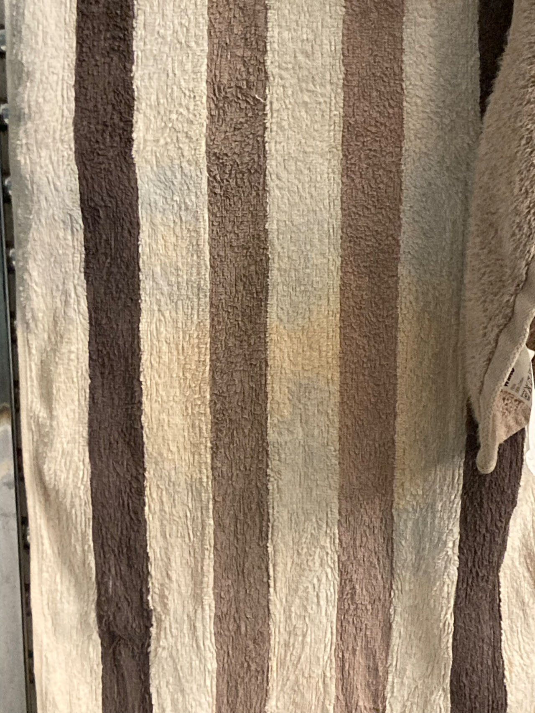

翻译、经历和一些感想
https://music.douban.com/review/16174004/
上班的日子（2024.6.24）
Cantonese
Bilingual
Trilingual
Bi 双
Tri 三
work in finance
financial
Mandarin
Portuguese
Develop skills
development
Influence
Information
With的发音
The 后加名词
上班的日子（2024.6.17）
坐在工位上
没有事情干
我想我今天一天都不会有事情干
就这样坐着
112步诗
从想写这首诗
到写完这首诗
我一共走了
112步
如此你就解决了哥德尔不完备定理
红色有时候可以是绿色，绿色有时候可以是红色。打印机有时候可以是纸张，纸张有时候可以是打印机。桌子有时候可以是地板，地板有时候可以是桌子。筷子有时候可以是我，我有时候可以是筷子。花盆有时候可以是植物，植物有时候可以是花盆。光有时候可能是光源，光源有时候可以是光。看着我的你，有时候可以是看着你的我，看着你的我，有时候可以是看着我的你。天有时候可以是地，地有时候可以是天。我有时候可以是什么都没有，什么都没有，有时候可以是我。音乐有时候，可以是你的耳朵，耳朵有时候可以是谁谁谁的音乐。我看到的，有时候可以是你看到的，你看到的，有时候可以是他看到的。最后看到那东西的人，有可能是那东西，那东西，最后有可能是我。我不可能不是什么东西，什么东西，不可能不是这个东西。我是这个，我在这里。这个东西在过去，现在，未来，都仅仅是这个东西。
关于展览《房间》的问答
Q 你展了一个房间，但房间没法进去，这展不是跟没有一样？
A 一个东西无法进入不意味着它不存在。
Q 你如何证明这个房间存在？
A 我无法证明。
Q 那房间外面是展览的一部分吗，比如我们现在看到的墙？
A 不是。
Q 房间的里面和外面的分界线在哪，外墙往里延伸多少毫米，微米？
A 所有你看不见的地方都在房间里面。
Q 房间里面有什么东西？
A 我不知道。
Q 那我要是开门进去呢？
A 房间没法从外面进去。
Q 这句话是什么意思？
A 就是字面上的意思，这个房间没法从外面进去。
Q 那难道可以从里面进去吗？
A 如果你可以的话。
燕麦奶
有瓶燕麦奶在我右手边
我现在还没喝它
无题（三）
每句说出的话都是诗。每次开悟之后都依然该干嘛干嘛。闭眼的时候你看不见台灯。看不见的地方有一个人或许和我在干着一模一样的事情。有时你能向上帝购买时间。水，你如此地水。从来没有一只鸟能够创造语言。在某一个世界里，脚踩到冰凉的地板，意味着地板是冰凉的。一个命题和一个命题的意义之间的差别，最好不要搞错。生活是分形的。佛祖说，一花一世界。
为了搞清楚现在与永恒的关系，有些希腊人费劲了脑筋。我爸爸，每天下班都玩消消乐。这是他的答案，和古希腊人没什么区别。有些声音只有在沉默里才能听见。这句话我已经说过了。在自我的扰乱里，我找不到下一刻。我爸爸从来没对我说过什么道理。我印象里是这样的。
自我是自我。自是自。我是我。沉湎在回忆里的时候，外星人向我竖了个中指。有些话还没说完。这只有当你开始继续说的时候才知道。而当你不知道说什么的时候，是没有话的。说的时候，总说到不说为止。不说话的人，没人能听到他们说话。而当他们开始说话都时候，神秘就消散了。神秘是一个神秘的词。
对一个觉得没有任何事情是神秘的人来说，所有事情都是神秘的。矛盾是沉默的开始。带着爱自圆其说是神的任务。我说这个的时候指的只是这个。这个。只有指着这个说这个时，有些事情才能统一。
小心。不要做声音的奴隶。
无题（二）
恐惧是自相矛盾，爱是自圆其说。没有一种意义比别的什么意义更伟大。当然，伟大也没什么意义。其实打出这一行字的时候我不知道下一行字是什么。但我打出这行字的时候，我就知道了。其实你是听得懂我的，不是吗？你与沉默要怎么对话。两个哑巴同时开口。我想对你说你想我对你说的事。你想对我说我想对你说的事。我听不到你。
洗面奶在肥皂盒旁。我有一些念头是无法说出来的。当你聆听的时候，你听到的是从一个不知它是否存在的地方冒出来的声音。
我看到一个条纹毛巾。声音和意义有时无法连接。但连接上的时候，我看到了一个条纹毛巾。钩子挂在门上，像钩子挂在门上。想的时候，你想到的是不想。只有在不想的时候，你才会开始想。就像没有死亡，就没有重生。时间的存在使语言和世界得以产生一种共通的结构。你无法与一个不存在的东西做爱。这是贞操锁的神学逻辑。
烟灰缸里可以乘烟灰。烟灰像灰，所以也叫灰。你有时累了，就会想睡觉。你不能在房间里确定外面像鸟叫的声音就是鸟发出来的。发出来的，这个词打了三遍。从语言里脱胎而出的是一个畸形的怪胎。我想语言自己能从自己身上学到点什么。
很多小东西放在一起就变成了大东西。时间与空间里都是。但我只能知道这道理的一部分。此时，一架飞机从头顶飞过。有时语言创造出一个新的世界。你无法创造一个已经有了的东西。这两棵棕榈树，静静地立在这。是两棵。我对它们没有什么看法。它们对我是否有看法，我不知道。此时飞机飞过棕榈树。眼睛，树，和飞机在某个时刻可能会在一条直线上。我无法想象此地与现在之外的地方是什么样子，至少无法如实地想象。复杂的结构总是想象的结果。数学家想象，时停时不停地想象。我宁愿想象而不是选择。而想象是上帝的选择不是你的选择。
你活在你的世界里。按照道理，你会死在别人的世界里。当你吃饭时你吃饭，当你擦手时你擦手。我停止。
无题（一）
不要突破你无法突破的东西。把你的脑子固定在一个方向的时候就固定在了一个方向。另一个方向不可能，这句话不是个真命题。方向从无里出生。
每句话都是一个谎言。错。对的事和错的事一样多。等号是什么。你能找出两枚一样的指纹吗。我的手永远不是你的手。我看我的我不是我。在某种程度上程度不存在。以及一个词语在的时候它并不是不在。一笔能不能画出一条衔尾蛇。数学的拓扑学不等于世界的拓扑学。有一种强烈的欲望，这种欲望让我做点什么。什么和怎么是两个不一样的词语。如何判断两个不一样的东西？意义与表象是同一个东西。假如说所有东西都是同一个东西，语言里会多一个真命题还是假命题。当我按下空格键时，一首歌开始播放。然后我看到几条竖线。语言与现实之间存在无限种对应，没有哪一种有特别的意义。“语言与现实共享一种共通的结构”这句话可能是个伪命题。事实上它正是语言（和世界）里无法证伪的命题之一。这样的命题有无数个。没有哪句话是错的。同理，也没有哪句话是对的。音符同理。
我们在时间里听到声音。没有一种声音比别的声音坏。好坏是时间（或一切同义词）的幻术。同义词不存在在这个世界，但不一定不存在在另一个世界。我在用另一个世界的东西说这个世界。同样地，我在用这个世界的东西说着另一个世界。在那个世界里，可以对时间做出可证伪的判断。我在说谎。同时，让谎言（与生命一起）继续下去。
写作者带有一种永恒的PTSD。它的来源永远保持沉默。你越沉默，我越嚣张。在眼睛看不见的地方，另一个世界出现。我抓住一种可能性时，另一种就溜走了。眼前的这个东西不是那个东西。在时间的最小单位里最多只能有一个字的存在可以被知道。当然一个字里有无限的时间。没有一句话能说出那一句无法被说出的话。或者那无数句。呼吸与钟表这两件事总有一些不一样。这种不一样同样是意识与人工智能之间的不一样。但其实它们一样，不是吗？
同样我并不期待我的话能说出什么不一样的东西。这是废话。废话当然是话。就像噪音也是音。你何必要喜欢特定一种音乐。这些话只有在不存在的时候才最道德。即使道德在语言里被说出，它也不存在在语言之中。诗的道德是什么？我在吃饭。当然不是说我现在在吃饭。好吧，道德就像你总知道自己要说这句话，而不是另一句。有时候你也不知道。不管你知道或不知道，这句话说出来的时候，它就已经被说出来了。所有的话都已经被说出来了。有时你听不到任何一句话。这时存在着沉默。沉默是道德的必然，但道德又让你开口。吃饭时你总需要开口，不开口吃饭的情况不算。
灵感总在来的时候才来。不来的时候，它永远不在。没有灵感的时候说的话，也不是假话。它与有灵感时说的话没有本质上的区别。本质上，或者非本质上的。你可以说谎话，但说不出假话。说出一句谎话就要用另一句谎话来圆。这正是我目前在做的事。现在就不是了。现在它是也不是。当然，老子说过道可道，非常道。老子不是老子。我没有同意或者不同意的。总之，你是对的，你是错的，我是对的，我是错的。你不能在做出判断的时候，不犯罪。活着的人总是在弥补。死了的人在时间结束前是否会苏醒？你相信谁的回答。谁？谁在沉默里说话。只有沉默。在不沉默的时候你想做什么？我想沉默。在我沉默的时候，我想做什么？哈哈。我想沉默。当然这是谎话，连同前面所有的话。沉默是什么，左边的无和右边的无，是同一个无吗？从前的无和之后的无，是同一个无吗？无无。我在PTSD。我是活着的人。不要突破你无法突破的东西。
有只鸽子
迎面向我走来一只
紫红色的鸽子
确切地说
是脖子下方那圈毛紫红色
它跟别的鸽子一样一扭一扭的
现在它已经走了
烦恼
小老鼠
你的脑袋小小的
小鸽子
你的脑袋也这么小
我大大的脑袋里有大大的烦恼
外星人
你们的脑袋有多大
你们也会有这样的烦恼吗
今天想杀了所有人
我想杀了所有人
所有人
所有人
所有人
都去死
真
真真假假
假假真真
真假真假
假真假真
谁啊
我写诗是在写给谁看？
我不知道
我也不用知道（这句提前说出口的话是谁说的？）
但如果我还是想知道
好吧
我现在开始幻想一个不存在的人
或许不是人
那东西是监督我说话做事的东西
监督，不太对，更像是观察
观察，也不太对，更像是跟随
越说越恐怖了
它是__吗？
不知道……
我也不用知道
操
他就是我 我就是他
我们都他妈是一样的
拉屎的时候
拉屎的时候
看到左边墙上有张28的照片
照片里的她看着我拉屎
好吧我继续拉
也许不止她一个人在看着我拉屎
凌晨五点多撒了泡尿
出门
撒了一泡尿
吐了两口痰
看飞机从天上飞过
这天可真蓝啊
烦
最近有点烦
脑袋里想的事情多了起来
我得每天撸一管
才能保持舒畅
撸吧
撸吧
把所有烦恼都撸掉
这
这水正在流进浴缸的下水道
我两只脚没在水里
等着这水流完
用iPad打下这些字后我剩下的时间又少了一些
我左手握着几把
右手拿着ipad
每撸一下
我这一生剩下的时间
就会少几秒
坐在客厅靠墙的椅子上
觉得创作也没意义
写下这句话之后
我不知道下一句是什么
洗澡时打字
我在浴缸里
眼前有
一个马桶
我在iPad打字
转头看见沐浴露和洗发水
我踩着喷头
免得水往上喷
溅出来
噢
我和zoe共同发出了一声噢
然后28叫我坐着
拿后面那把椅子过来
我就到这了
解放路写字楼大厅
一个老太推着拖车
上面装着几个垃圾袋
我数了数
有四个
不确定
解放路写字楼内
一个女人弓着背
看着手机
找着什么
她走向酒店前台
问了些我听不清的话
前台答了些我听不清的话
另两个女人走过她
一个拖着行李箱
另一个没有
前台向第一个女人说什么 就是那个
就是那个
我在这
我在这
它在那
他们在那
他在那
她们在那
他在那
它们在那
年初一午饭
可是现在
我就想随便吃点
饭不热没关系
面前还有一盘四季豆炒香肠
和莴笋
我还会吃一个
酱烩蛋
空虚有时候
左手握着几把
套弄套弄
生活如此空虚
我在这里
套弄着几把
软软的
上下上下
撸管
上
下
上
下
上
下
上
下
上
下
上
下
上
下
房间里的灯
我的头顶正上方有两个灯
前上方有三个灯
左前上方有一个灯
我房间天花板上总共有六个灯
诚实不诚实
诚实地说
每一个人正在做的事都是诚实的
即使撒谎也是
自杀也是
那什么是不诚实
比如这首诗第一行就不诚实
好吧可能诚实不诚实本来就没什么差别
十一点零六
把一根虾条送进嘴里
咬一口
用后槽牙
再挠一挠鼻孔
啊
碗
洗碗的时候
忽然发现这个碗
好圆啊
这时我开始犯困
面对重要的东西
（当然我也不知道什么是重要）
我们总容易犯困
如果想睡觉
那就安心睡吧
如果你面对的是最重要的东西
那就一睡不醒吧
成为一个马桶
有时候你想成为一个马桶
过了一会你又不想
再过一会 你又想成为一个马桶
等啊等
那时我坐在一个石墩上
等她
六点零一分
她还没到
现在是第二天的六点二十八分
我们已经见过面了
前天很想见那个谁
前天晚上
我很想见那个谁
但我知道能不能见到
不是我说了算
也不是他说了算
我们最后
到底还是没见到
平价新型铝合金笛子横笛初学入门进阶练气 小众文艺CDEFG调全套
笛子收到
美观大方
音质饱满宏亮
音准标准可信
是一把很好的笛子
冬夏防裂防爆防湿防身
让我很喜欢
这首诗和下面这首诗是不是同一首诗这个问题并不重要
这是全世界写得最好的诗也是全世界写得最烂的诗
呃
呃
你好
读我写的东西
不如直接和我聊天
什么？
你问我在哪
啊
不告诉你
但我爱你
今天没睡好
今天没睡好
感觉心情很沮丧
身体很累
下午五点起床
什么都不想干
我今天不开心
不知道为什么
我今天不开心
有点想杀人
啊啊啊啊啊啊啊啊啊啊啊啊啊啊啊啊啊啊啊啊啊啊啊啊啊啊啊啊啊啊啊啊啊啊啊啊啊啊啊啊啊啊啊啊啊啊啊啊啊啊啊啊啊啊啊啊啊啊啊啊啊啊啊啊啊啊啊啊啊啊啊啊啊啊啊啊啊啊啊啊啊啊啊啊啊啊啊啊啊啊啊啊啊啊啊啊啊啊啊啊啊啊啊啊啊啊啊啊啊啊啊啊啊啊啊啊啊啊啊啊啊啊啊啊啊啊啊啊啊啊啊啊啊啊啊啊啊啊啊啊啊啊啊啊啊啊啊啊啊啊啊啊啊啊啊啊啊啊啊啊啊啊啊啊啊啊啊啊啊啊啊啊啊啊啊啊啊啊啊啊啊啊啊啊啊啊啊啊啊啊A啊啊啊啊啊啊啊啊啊啊啊啊啊啊啊啊啊啊啊啊啊啊啊啊啊啊啊啊啊啊啊啊啊啊啊啊啊啊啊啊啊啊啊啊啊啊啊啊A啊啊啊A啊啊啊啊啊啊啊啊啊啊啊啊啊啊啊啊啊啊啊啊啊啊啊啊啊啊啊啊啊啊啊啊啊啊啊啊啊啊啊
我还是不开心
继续啊啊啊啊啊啊啊啊啊啊啊啊啊啊啊啊啊啊啊啊啊啊啊啊啊啊啊啊啊啊啊啊啊啊啊啊啊啊啊啊啊啊啊啊啊啊啊啊啊啊啊啊啊啊啊啊啊啊啊啊啊啊啊啊啊啊啊啊啊啊啊啊啊啊啊啊啊啊啊啊啊啊啊啊啊啊啊啊啊啊啊啊啊啊啊啊啊啊啊啊啊啊啊啊啊啊啊啊啊啊啊啊啊啊啊啊啊啊啊啊啊啊啊啊啊啊啊啊啊啊啊啊啊啊啊啊啊啊啊啊啊啊啊啊啊
好了 开心了
我没有诗
嘿嘿
生活
要是没有诗
就不要
没诗找诗
我在房间里
从客厅走到卧室
从卧室走到另一个卧室
再走到书房
再从书房走到厨房
然后呢
我放了一个屁
然后呢
我抽了一张纸
然后呢
我擦了屁股
然后呢
我屁眼有点疼
解塑料袋
塑料袋打了个结
我试着解开
我以前从来不解
这次想解解
解着解着
我发现解不开
最后还是把袋子扯开了
烘干机在转
嗡嗡嗡嗡嗡 嗡嗡嗡嗡嗡 嗡嗡嗡嗡嗡 嗡嗡嗡嗡嗡 嗡嗡嗡嗡嗡 嗡嗡嗡嗡嗡 嗡嗡嗡嗡嗡 嗡嗡嗡嗡嗡 嗡嗡嗡嗡嗡 嗡嗡嗡嗡嗡 嗡嗡嗡嗡嗡 嗡嗡嗡嗡嗡 嗡嗡嗡嗡嗡 嗡嗡嗡嗡嗡 嗡嗡嗡嗡嗡 嗡嗡嗡嗡嗡 嗡嗡嗡嗡嗡 嗡嗡嗡嗡嗡 嗡嗡嗡嗡嗡 嗡嗡嗡嗡嗡 嗡嗡嗡嗡嗡 嗡嗡嗡嗡嗡 嗡嗡嗡嗡嗡 嗡嗡嗡嗡嗡 嗡嗡嗡嗡嗡 嗡嗡嗡嗡嗡 嗡嗡嗡嗡嗡 嗡嗡嗡嗡嗡 嗡嗡嗡嗡嗡 嗡嗡嗡嗡嗡 嗡嗡嗡嗡嗡 嗡嗡嗡嗡嗡
复制粘贴跟不上了 我走了
Message to John T. Gast 18/1/2024
All answered. No questions at all. Let go. Stay in silence. Peace.
无题
神的语言是无语 上帝什么都没有跟我说 i'm nothing but nothing 但这句话是个谎言 因为打字的我还在 但这不重要 一旦有但 就离__远了 沉默
让我们说一说画吧 刚刚画了一些 为什么要说这个 因为我想说说美 美是什么 无语 而我问出了美是什么 矛盾 离__远了 沉默
只有无意识才最接近神 为什么用只有才 因为我 矛盾 离__远了 沉默
如何说出不矛盾的话 矛盾 沉默
既然说到美让我们来说说真诚 最天真的东西 说出 不天真 矛盾 离__远了 沉默
美=真=善 这是在侧写__ 列出等式 等式说出了任何东西吗 无 这里暂时还不需要沉默 （后补充：因为当时反应迟钝 因为 矛盾 沉默） 那我们来继续侧写__ 此处省略道德经五千字 佛经十万八千字 维特根斯坦多少字不知道 然后呢
然后 我回来了 于是离__远了
不说了 我走了
___
我说的一切话都是错的
一切话都是错的
包括这句话
以及这句话
以及___
god play us with the fear of death
沉默
沉默
沉默
沉默
沉默
hi
hi everything
啊
啊啊啊啊
啊啊啊啊啊啊啊
啊
啊
啊
啊
啊啊啊啊啊啊啊啊啊啊啊啊啊啊啊啊啊啊啊啊啊啊啊啊啊啊啊啊啊啊啊啊啊啊啊啊啊啊啊啊啊啊啊啊啊啊啊啊啊啊啊啊啊啊啊啊啊啊啊啊啊啊啊啊啊啊啊啊啊啊啊啊啊啊啊啊啊啊啊啊啊啊啊啊啊啊啊啊啊啊啊啊啊啊啊啊啊啊啊啊啊啊啊啊啊啊啊啊啊啊啊啊啊啊啊啊啊啊啊啊啊啊啊啊啊啊啊啊啊啊啊啊啊啊啊啊啊啊啊啊啊啊啊啊啊啊啊啊啊啊啊啊啊啊啊啊啊啊啊啊啊啊啊啊
试图在二元性框架内表达不可说之物的努力都是徒劳的
这是回应下面这首诗
极限的干净
这首诗被我删了